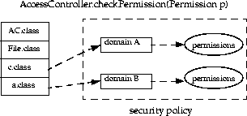

| 목차 | 전의 항목 | 다음의 항목 | Java 시큐리티 아키텍쳐(architecture) |
ProtectionDomain 클래스는, 도메인의 특성을 캡슐화합니다. 도메인은, 지정된 주체세트의 액세스권이 실행되고 있을 때, 액세스권이 주어지고 있는 인스턴스가 있는 클래스세트를 둘러쌉니다.ProtectionDomain 는, CodeSource, ClassLoader, 주체의 배열, 및 액세스권의 컬렉션으로 구성되어 있습니다. CodeSource 는, 이 도메인의 모든 클래스에 대한 코드 베이스(java.net.URL), 이 도메인의 모든 코드에 서명된 비밀열쇠에 대응하는 공개키의 증명서세트 (java.security.cert.Certificate 타입)를 캡슐화합니다. 주체는, 코드의 실행 대상의 사용자를 나타냅니다.
ProtectionDomain 의 구축시에게 건네지는 액세스권은, 적용되고 있는 정책에 관계없이, 도메인에 바인드 되고 있는 액세스권의 정적인 세트를 나타냅니다. 그 후, 시큐리티 체크시에 ProtectionDomain 에 의해, 현재의 정책에의 문의를 해 도메인에 부여되고 있는 동적인 액세스권이 취득됩니다.
다른 CodeSource 로부터의 클래스, 또는 다른 주체에 실행되는 클래스는, 별개의 도메인에 속하고 있습니다.
현재 Java 2 SDK 의 일부로서 제공되고 있는 코드는, 모두 시스템 코드로 간주해져 다만 1 개의 시스템 도메인내에서 동작합니다. 애플릿 또는 어플리케이션은, 각각의 정책에 의해 결정할 수 있는 도메인내에서 동작합니다.
시스템 도메인 이외의 도메인내의 객체가, 시스템 도메인 이외의 다른 도메인내의 객체를 자동적으로 검출할 수 없게 하는 것은 가능합니다. 이 구분은, 클래스를 주의 깊게 해결해, 주의 깊고 로딩 하는 것으로써 실시합니다. 예를 들어, 도메인 마다 다른 클래스 로더를 사용하는 등 방법입니다. 다만, 이 방법에서는 SecureClassLoader (또는 그 서브 클래스)가 다른 도메인으로부터 클래스를 로드할 수 있으므로, 이러한 클래스가 같은 이름 공간에 공존하는 것이 허락됩니다 (클래스 로더에 의한 구분의 경우와 같이).
AccessController 클래스는, 다음의 3 개의 목적으로 사용됩니다. 각각의 목적에 대해서는, 이후에로 자세하게 설명합니다.
시스템 자원에의 액세스를 제어하는 코드는, 특정의 시큐리티 모델을 사용하는 경우는 AccessController 메소드 및 메소드가 이용하는 액세스 제어 알고리즘을 호출합니다. 한편, 어플리케이션이 시큐리티 모델을, 실행시에 인스톨 되는 SecurityManager 에 맡기는 경우는, 이 메소드는 아니고 SecurityManager 클래스의 메소드를 호출합니다.예를 들어, 액세스 제어의 호출에는 일반적으로, 다음과 같은 코드를 사용하고 있었습니다 (JDK 의 구버젼로부터.
ClassLoader loader = this.getClass(). getClassLoader();
if (loader ! = null) {
SecurityManager security = System.getSecurityManager();
if (security ! = null) {
security.checkRead("path/file");
}
}
새로운 아키텍쳐(architecture)에서는, 호출원의 클래스에 관련하는 클래스 로더의 유무에 관계없이, 체크를 호출하는 것이 일반적인 방법입니다. 코드는, 다음과 같은 간결한 것이 됩니다.
FilePermission perm = new FilePermission("path/file", "read");
AccessController.checkPermission(perm);
AccessController 의checkPermission메소드는, 현재의 실행 문맥을 조사해, 요구된 액세스가 허가되고 있는지 어떤지를 올바르게 판단합니다. 액세스가 허가되고 있는 경우는, 즉시 복귀합니다. 액세스가 허가되어 있지 않은 경우는, AccessControlException (java.lang.SecurityException 의 서브 클래스) 예외가 발행됩니다.브라우저에 따라서는, 다음과 같은 케이스가 있으므로 주의가 필요합니다. 종래의 브라우저안에는, 인스톨 되고 있는 SecurityManager 가 다른 시큐리티 상태를 나타내는 것이 있어, 그 결과, 다른 동작이 발생할 가능성이 있습니다. 구버젼과의 호환성이기 때문에, SecurityManager 의
checkPermission메소드를 사용할 수 있습니다.
SecurityManager security = System.getSecurityManager();
if (security ! = null) {
FilePermission perm = new FilePermission("path/file", "read");
security.checkPermission(perm);
}
현재 상태로서는, SecurityManager 의 이 사용법을 변경합니다만, 장래, Java 2 SDK 에 적절한 액세스 제어 알고리즘이 짜넣어졌을 때에는, 이후의 어플리케이션의 프로그래밍에는 새로운 기법을 사용하는 것을 추천합니다.SecurityManager 의
checkPermission메소드는, 디폴트에서는 실제로 AccessController 의checkPermission메소드를 호출합니다. SecurityManager 의 구현에는 각각 독자적인 관리 수법이 구현되고 있어 액세스가 허가될지 어떨지의 판단에 한층 더 제한이 추가되고 있을 가능성도 있습니다.
다음의 그림과 같이, 복수의 호출원의 체인을 가지는 thread로, 액세스 제어의 체크를 실시한다고 합니다 (보호 도메인의 경계를 넘는, 복수 메소드의 호출과 가정). AccessController 의
checkPermission메소드가 제일 새로운 호출원 (File 클래스의 메소드등)에 의해 불려 갔을 때, 요구된 액세스가 허가되고 있는지 어떤지를 판단하는 기본의 알고리즘은 다음과 같습니다.
호출 체인안에, 요구된 액세스권을 가지지 않는 호출원이 있는 경우는, AccessControlException 가 발행됩니다. 다만, 어느 호출원의 도메인에 그 액세스권이 주어지고 있어 그 호출 바탕으로 「특권 첨부 (privileged)」의 마크를 붙일 수 있고 있어 (다음의 섹션을 참조), 그것 이후 그 호출원으로부터 (직접 또는 간접적으로) 불려 가는 모든 관계자가 그 액세스권을 가지는 경우는 예외입니다.2 개의 구현 수법이 있습니다.
이 방법의 장점은, 액세스가 허가되고 있는지 어떤지의 체크가 용이하게 되어, 많은 경우, 신속히 된다고 하는 점입니다. 단점은, 도메인의 경계를 넘은 호출의 빈도보다 액세스권의 체크의 빈도가 꽤 적게 되기 위해서(때문에), 액세스권의 갱신의 상당한 부분이 쓸데없는 행위가 될 가능성이 있다고 하는 점입니다.
이 방법의 단점의 1 개에, 액세스권의 체크시에 퍼포먼스가 저하할 가능성이 있습니다. 이것은 「적극적 평가」의 경우에서도 일어날 가능성이 있습니다만, 빠른 시기에 일어나, 도메인을 넘은 호출의 1 개씩에 확산하고 있습니다. 우리가 행한 구현에서는, 양호한 퍼포먼스를 달성되었습니다. 전반적으로, 소극적 평가의 방법이 경제적이라고 생각합니다.따라서, 액세스권의 체크의 알고리즘은, 현재는 「소극적 평가」방법으로 구현되고 있습니다. 현재의 thread가 호출해 원 1 으로부터 숫자의 승순으로 m 개의 호출원을 통과해, 호출원 m 가
checkPermission메소드를 호출한다고 합니다. 기본 알고리즘checkPermission는, 액세스가 허가되고 있는지 어떤지를 판단하기 위해서(때문에) 다음의 코드를 사용합니다 (상세한 것에 대하여는 후술).
i = m;
while (i > 0) {
if (caller i's domain does not have the permission)
throw AccessControlException
else if (caller i is marked as privileged)
return;
i = i - 1;
};
AccessController 클래스의 새로운 static 메소드에 의해, 클래스 인스턴스내의 코드는 AccessController 에 그 코드의 본체가 「특권 첨부이다」것을 통지할 수 있습니다. 특권 첨부의 경우, 그 코드의 본체는, 액세스의 요구를 일으킨 코드가 무엇으로 있으려면 관계없이, 이용 가능한 자원에의 액세스를 요구할 책임만을 집니다.즉, 어느 호출원이 문맥 인수 (문맥 인수에 대해서는 후술) 없음으로
doPrivileged메소드를 호출하면(자), 그 호출 바탕으로는 「특권 첨부」의 마크를 붙일 수 있습니다.checkPermission메소드는, 액세스 제어의 판단을 실시할 때 「특권 첨부」의 마크 첨부의 호출 바탕으로 만나면(자) 체크를 중지합니다. 그 호출원의 도메인이 지정된 액세스권을 가지고 있는 경우는,checkPermission는 그 이상의 체크를 실시하지 않고 정상 복귀해, 요구된 액세스가 허가되고 있는 것을 나타냅니다. 그 도메인이 지정된 액세스권을 가지지 않는 경우는, 일반적으로은 예외가 발행됩니다.「특권 첨부」기능의 일반적으로의 사용법은, 다음과 같습니다.
「특권 첨부」블록으로부터의 반환값이 필요없는 경우는, 다음과 같이 합니다.
somemethod() {
...normal code here...
AccessController.doPrivileged(new PrivilegedAction() {
public Object run() {
// privileged code goes here, for example:
System.loadLibrary("awt");
return null; // nothing to return
}
});
...normal code here...
}
PrivilegedAction 는,run라고 하는 단일의 메소드를 가지는 인터페이스로,run는 Object 를 돌려줍니다. 위의 예는, 그 인터페이스를 구현하는 익명의 내부 클래스 구현을 나타내고 있어run메소드의 고정 구현이 제공되고 있습니다.doPrivileged에의 호출해 때에, PrivilegedAction 의 구현의 인스턴스가 건네받습니다.doPrivileged메소드는, 특권을 유효하게 한 후에 PrivilegedAction 의 실행으로부터run메소드를 호출해,run메소드의 반환값을doPrivileged의 반환값으로서 돌려줍니다. 다만, 이 예에서는 반환값은 무시됩니다.내부 클래스의 상세한 것에 대하여는,
http://java.sun.com/products/jdk/1. 1/docs/guide/innerclasses/spec/innerclasses.doc.html의 「Inner Classes Specification」또는http://java.sun.com/docs/books/tutorial/java/more/nested.html와http://java.sun.com/docs/books/tutorial/java/more/innerclasses.html의 「More Features of the Java Language trail of the Java Tutorial」의 페이지를 참조해 주세요.반환값을 돌려줄 필요가 있는 경우는, 다음과 같이 합니다.
somemethod() {
...normal code here...
String user = (String) AccessController.doPrivileged(
new PrivilegedAction() {
public Object run() {
return System.getProperty("user.name");
}
}
);
...normal code here...
}
run메소드내의 동작으로 「체크 종료」예외 (메소드의throws절안에 기술된다)를 발행하는 경우는, PrivilegedAction 인터페이스는 아니고 PrivilegedExceptionAction 인터페이스를 사용할 필요가 있습니다.
somemethod() throws FileNotFoundException {
...normal code here...
try {
FileInputStream fis = (FileInputStream)
AccessController.doPrivileged(
new PrivilegedExceptionAction() {
public Object run() throws FileNotFoundException {
return new FileInputStream("someFile");
}
}
);
} catch (PrivilegedActionException e) {
// e.getException() should be an instance of
// FileNotFoundException,
// as only "checked" exceptions will be "wrapped" in a
// <code>PrivilegedActionException</code>.
throw (FileNotFoundException) e.getException();
}
...normal code here...
}
「특권 첨부」에는 몇개인가 중요한 점이 있습니다. 우선, 이 개념은 단일 thread의 내부에서만 존재합니다. 특권 첨부의 코드가 종료하면(자), 그 특권은 즉시 소멸합니다.다음에, 이 예에서는,
run메소드내의 코드 본체는 특권 첨부입니다. 그러나, 이 코드가 특권을 가지지 않는 신뢰성의 낮은 코드를 호출하면(자), 불려 간 코드는 결과적으로 모든 특권이 주어지게 됩니다. 액세스권은, 특권 첨부의 코드가 그 액세스권을 가지는 경우에만 주어져checkPermission의 호출에 이르는 호출 체인의 이 이후의 호출원도 모두와 같이 됩니다.「특권 첨부」의 코드를 작성하는 방법의 상세한 것에 대하여는,
http://java.sun.com/j2se/sdk/1. 2/docs/guide/security/doprivileged.html를 참조해 주세요.
thread가 새로운 thread를 생성할 때는, 새로운 스택이 생성됩니다. 새로운 thread가 생성되었을 때에 현재의 시큐리티 문맥을 고쳐 쓸 수 없는 경우, 새로운 thread 중(안)에서AccessController.checkPermission가 불려 갔을 때의 시큐리티의 판단은, 새로운 thread의 문맥인 만큼 기초를 두어 행해져 친thread의 문맥은 고려되지 않습니다.이 명확한 스택의 생각 그 자체는 시큐리티상의 문제로는 되지 않습니다만, 안전한 코드 (특히 시스템 코드)를 기술하는데 있어서, 숨은 실수를 일으키기 쉬워집니다. 경험이 부족한 개발자는, 아이 thread (신뢰할 수 없는 코드를 포함하지 않는 것 등)는, 친thread (신뢰할 수 없는 코드를 포함하는 것 등)로부터 같은 시큐리티 문맥을 상속하면(자) 가정해 버리는 것을 생각됩니다. 이것은, 부모의 문맥이 실제는 보존되어 있지 않은 경우, 제어 대상의 자원에 새로운 thread로부터 액세스 하면(자) (그 자원을 신뢰할 수 없는 코드에 건네주면(자)) 예기치 않은 시큐리티 홀의 원인이 됩니다.
이 때문에, 새로운 thread가 생성될 때는, 아이 thread의 생성 시점에 있어서의 친thread의 시큐리티 문맥을 아이 thread가 확실히 자동 상속 (thread의 생성등의 코드를 통해서)하도록(듯이) 해, 그 이후의 아이 thread에서의
checkPermission의 호출로, 상속한 부모의 문맥이 고려되도록(듯이) 했습니다.즉, 논리적 thread 문맥은, 부모의 문맥 (후술의 AccessControlContext 의 형식)과 현재의 문맥의 양쪽 모두를 포함하도록(듯이) 확장되어 액세스권의 체크를 위한 알고리즘은, 다음과 같이 확장됩니다. 전술한 것처럼,
checkPermission의 호출에 이르기까지는 m 개의 호출원이 있습니다. AccessControlContext 의checkPermission메소드의 상세한 것에 대하여는, 나중에 설명하겠습니다.
i = m;
while (i > 0) {
if (caller i's domain does not have the permission)
throw AccessControlException
else if (caller i is marked as privileged)
return;
i = i - 1;
};
// Next, check the context inherited when
// the thread was created. Whenever a new thread is created, the
// AccessControlContext at that time is
// stored and associated with the new thread, as the "inherited"
// context.
inheritedContext.checkPermission(permission);
이 상속은, 예를 들어, 손자가 부모와 그 부모의 양쪽 모두의 성질을 상속하는 것과 같이 과도기적인 것입니다. 또, 상속된 문맥은, 아이 문맥이 최초로 실행되는 시점은 아니고, 아이 문맥이 생성된 시점에서 보존됩니다. 상속의 기능에 대해서는 API 의 공의 변경은 없습니다.
전술한 것처럼, AccessController 의checkPermission메소드는, 현재의 실행 thread내에서 (상속한 문맥도 포함한다) 시큐리티 체크를 실시합니다. 이러한 시큐리티 체크가 다른 문맥내에서만 가능한 경우에는, 문제가 생깁니다. 즉, 어느 문맥내에서 실시해야 할 시큐리티 체크를, 실제로는 다른 문맥으로 실시하는 것이 필요한 경우가 있습니다. 예를 들어, 어느 thread가 다른 thread에 이벤트를 보냈을 때, 그 서비스에는 콘트롤러 자원에의 액세스가 필요해요에, 요구 이벤트를 처리하는 후자의 thread가 액세스 제어를 행하기 위한 적절한 문맥을 가지고 있지 않은 것 같은 경우입니다.이 문제에 대처하기 위해서, AccessController 에
getContext메소드와 AccessControlContext 클래스가 준비되었습니다.getContext메소드는, 현재의 호출 문맥을 AccessControlContext 객체에 포함해 돌려줍니다. 호출의 예를 다음에 나타냅니다.
AccessControlContext acc = AccessController.getContext();
이 문맥은, 적절한 정보를 수중에 넣어, 다른 문맥으로부터 이 문맥 정보를 조사하는 것으로, 액세스 제어의 판단을 실시할 수 있도록(듯이) 합니다. 예를 들어, 어느 thread는 다른 thread에 요구 이벤트를 보내면서, 이 문맥 정보를 제공할 수가 있습니다. AccessControlContext 그 자체에는checkPermission메소드가 있어, 현재의 실행 thread의 문맥은 아니고 보관 유지하고 있는 문맥에 근거해 액세스의 판단을 실시합니다. 따라서, 2 번째의 thread는 필요한 경우에 다음의 호출을 실시하는 것으로, 적절한 시큐리티 체크를 할 수 있습니다.
acc.checkPermission(permission);
이 메소드의 호출은 2 번째의 thread로 행해집니다만, 1 번째의 thread의 문맥으로 시큐리티 체크를 실시하는 것으로 같은 것입니다.또, 어느 액세스 제어 문맥에 대해서 1 개 또는 복수의 액세스권의 체크가 필요한 때에, 어느 액세스권을 체크할까의 우선도가 불명한 일이 있습니다. 이 경우는, 다음의 문맥으로
doPrivileged메소드를 사용할 수 있습니다.
somemethod() {
AccessController.doPrivileged(new PrivilegedAction() {
public Object run() {
// Code goes here. Any permission checks from
// this point forward require both the current
// context and the snapshot's context to have
// the desired permission.
}
}, acc);
...normal code here...
AccessController 의checkPermission메소드가 이용하는 알고리즘은, 이것으로 방법이라고입니다. 현재의 thread가 호출해 원 1 으로부터 숫자의 승순으로 m 개의 호출원을 통과해, 호출원 m 가checkPermission메소드를 호출한다고 합니다. 알고리즘checkPermission는, 액세스가 허가되고 있는지 어떤지를 판단하기 위해서(때문에) 다음의 코드를 사용합니다.
i = m;
while (i > 0) {
if (caller i's domain does not have the permission)
throw AccessControlException
else if (caller i is marked as privileged) {
if (a context was specified in the call to doPrivileged)
context.checkPermission(permission);
return;
}
i = i - 1;
};
// Next, check the context inherited when
// the thread was created. Whenever a new thread is created, the
// AccessControlContext at that time is
// stored and associated with the new thread, as the "inherited"
// context.
inheritedContext.checkPermission(permission);